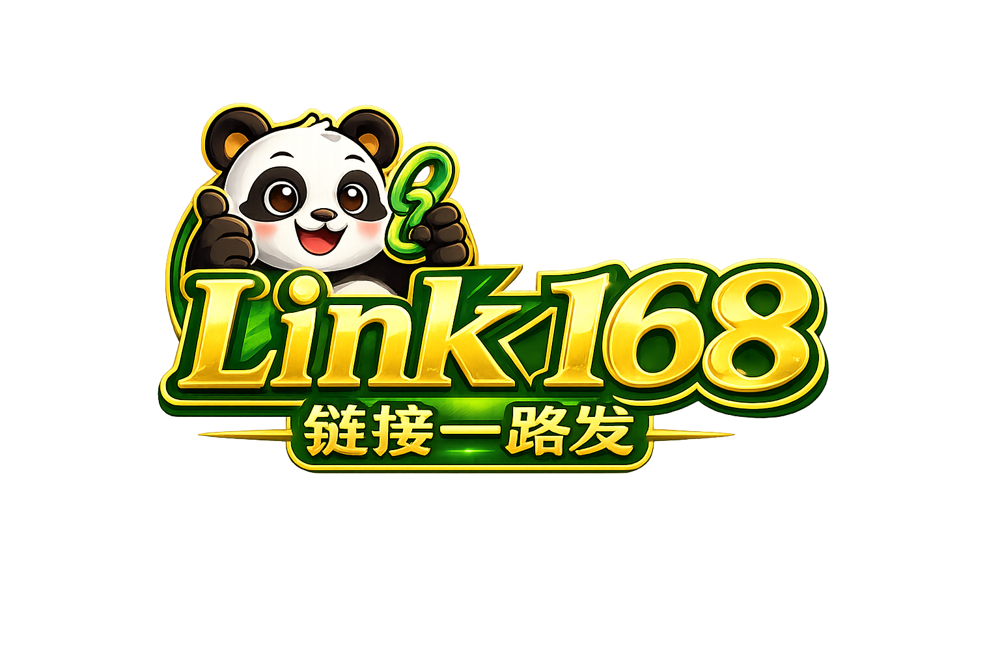

A
温润品牌编辑部
给创作者、咨询师、小品牌的内容型名片。强调留白、标题、故事、作品和商务合作。
- 适合公开主页传播
- 适合小红书/公众号截图
- 后台效率需要 B 补足

Design LabVisual Directions
A
给创作者、咨询师、小品牌的内容型名片。强调留白、标题、故事、作品和商务合作。
B
给后台和核心编辑流程。强调任务、状态、组件管理、实时预览和低学习成本。
C
给付费 AI、经营版和企业版。强调知识库、线索、任务、智能建议和可信数据。
Moodboards
Homepage First Screen
温润品牌编辑部
适合自媒体创作者：小红书、抖音、公众号、课程社群、商务合作和 AI 创作助手入口。
现代创作者工作台
适合小商家：门店介绍、商品服务、微信客服、到店预约、优惠活动和 AI 经营助手。
AI 经营中枢
适合一人公司：服务方案、案例、预约咨询、知识库、销售客服和经营数据。
Dashboard
AI 已根据品牌语气生成 5 个小红书选题。
完善简介、添加微信客服、下载二维码。
昨日 48 次咨询，AI 判断 6 条高意向线索。
Public Profile
Components
Mobile Preview
Flows
Recommendation
用现代创作者工作台统一 Dashboard 与 Workbench；公开主页吸收温润品牌编辑部的内容气质；AI 经营中枢只进入 Plus、经营版和企业版，避免免费用户第一屏过重。
| 方向 | 总分 | 角色 |
|---|---|---|
| A 温润品牌编辑部 | 91 | 公开主页气质 |
| B 现代创作者工作台 | 98 | 主后台结构 |
| C AI 经营中枢 | 94 | 付费 AI / 企业版 |